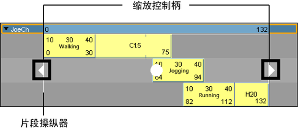

从“Trax 编辑器”(Trax Editor)缩放片段
- 拖动下角片段热点来缩放片段。
在缩放片段时，将显示“缩放”鼠标指针  。
。
在减小（小于原始片段长度的 100%）或缩小片段时，实际上是压缩片段上的动画，以便生成的动画显示得较快或加速。
在放大（大于原始片段长度的 100%）片段时，实际上是扩展片段上的动画，以便生成的动画显示得较慢。
注：
在“Trax 编辑器”(Trax Editor)中移动或缩放片段时，这些片段的边缘与相邻片段的边缘对齐。当使用的片段的开始值或结束值不是整数时，或您要查看许多帧并要求精确度时，这非常有用。
同时缩放多个片段
- 可以选择一个或多个角色中的多个片段（按住 Shift 键并单击），然后使用片段操纵器的缩放控制柄来同时缩放所有这些片段。

从“通道盒”(Channel Box)缩放片段
- 在“Trax 编辑器”(Trax Editor)中，选择要缩放的片段。
- 在 Maya 主菜单中，选择。
将出现“通道盒”(Channel Box)，其中显示选定片段的通道。
- 在“通道盒”(Channel Box)中，设定“比例”(Scale)通道值。
请参见缩放(Scale)。